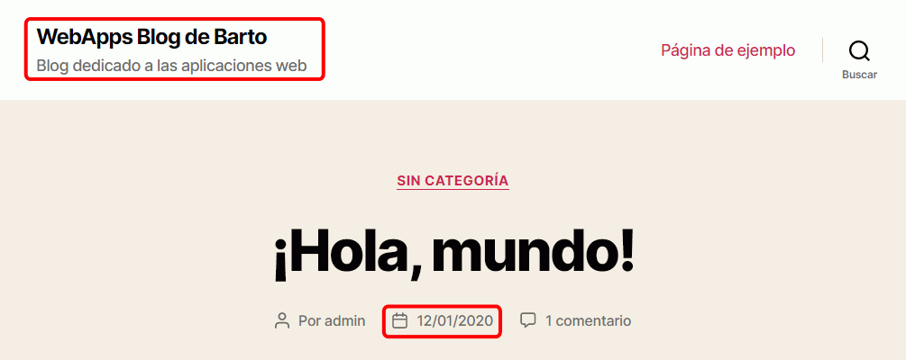
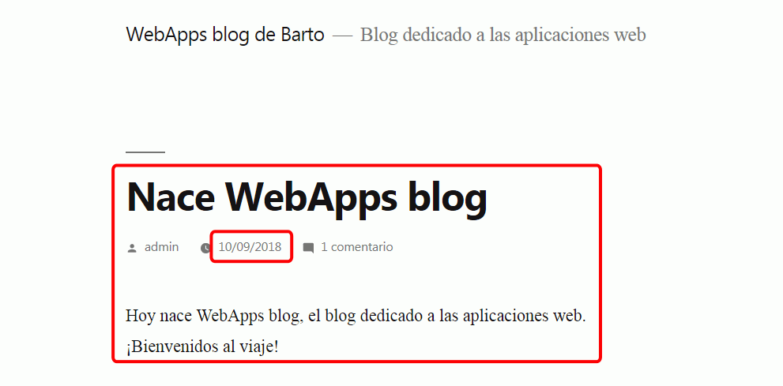
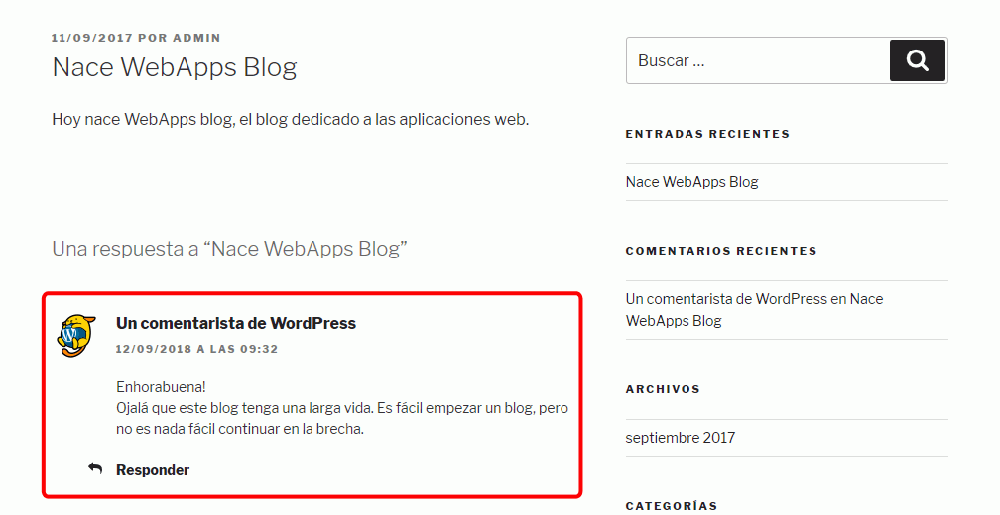
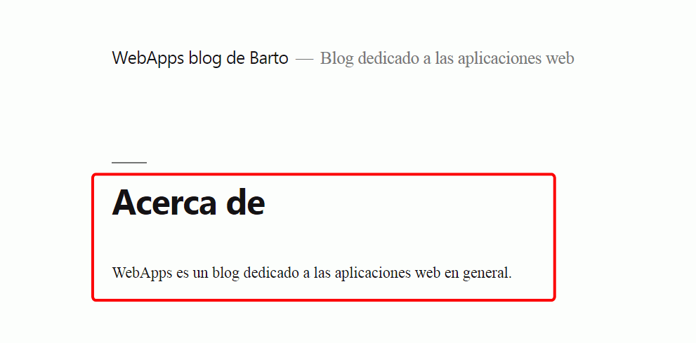
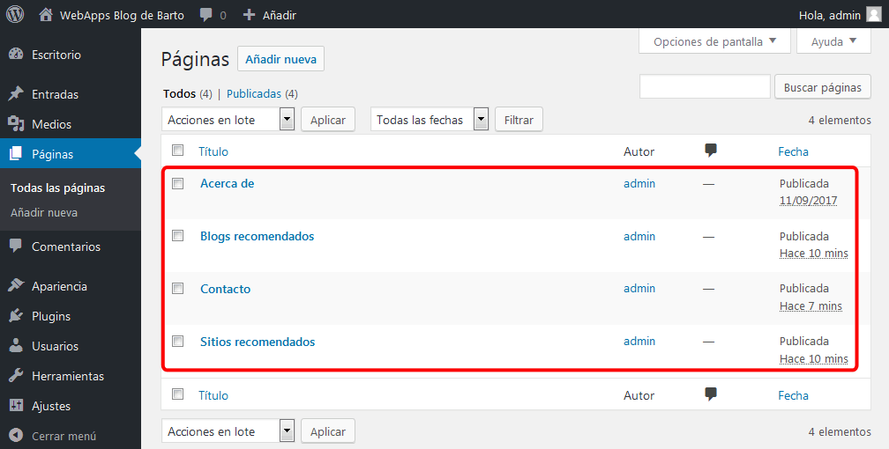
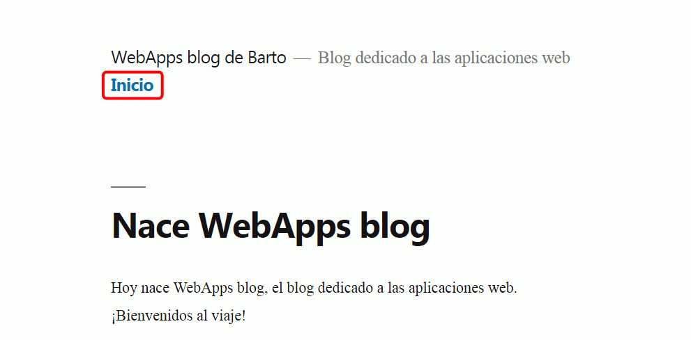
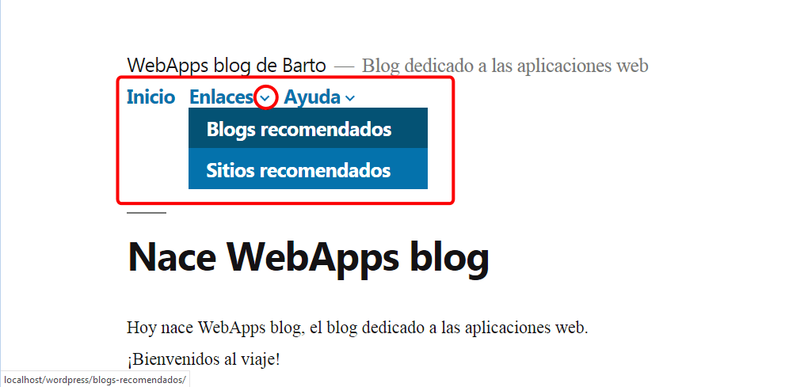
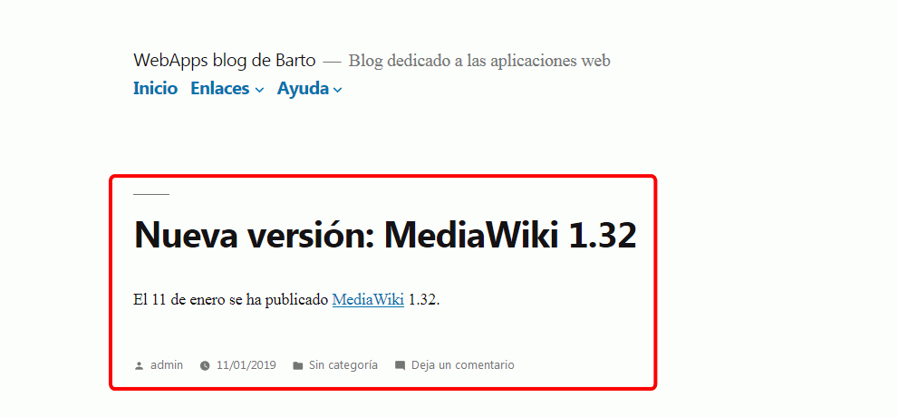
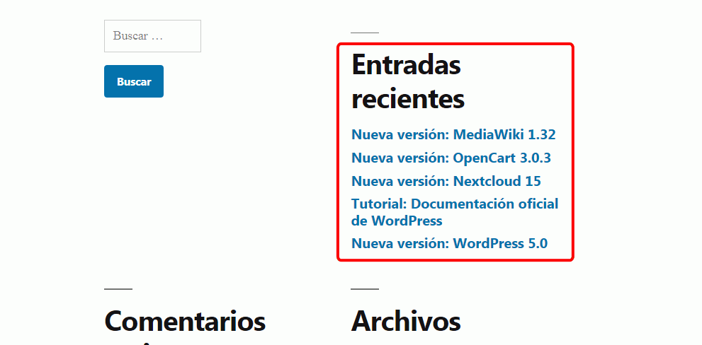

En esta lección se proponen ejercicios para conocer y utilizar WordPress. Se pueden consultar las soluciones de estos ejercicios de WordPress, aunque se recomienda intentar realizarlos primero sin recurrir a estas soluciones.
WordPress (2) 1 - Primeros pasos
Al instalar WordPress, el blog contiene ya algunos elementos predeterminados. En este ejercicio se trata de modificar algunos de estos elementos, sin crear ninguno más. En algunos casos, estos elementos se pueden modificar desde varios sitios.
Ajustes básicos
Título del sitio: "WebApps blog de NOMBRE-ALUMNO"
Descripción corta: "Blog dedicado a las aplicaciones web".
Zona horaria: En el caso de la península ibérica, la zona horaria es UTC+1.
Formato de fecha: 11/01/2019
Formato de hora: 21:14

Entradas
El blog predeterminado contiene una entrada que se titula "¡Hola mundo!".
Primera entrada
Modifique el título y contenido de la primera entrada. Por ejemplo,
Nace WebApps blog
Hoy nace WebApps blog, el blog dedicado a las aplicaciones web. ¡Bienvenidos al viaje!
Modifique la fecha de la entrada. Por ejemplo, al 10 de septiembre de 2018.
Modifique el enlace permanente de la página. Por ejemplo a nace-webapps-blog.

Comentario a la primera entrada
Modifique el contenido del comentario. Por ejemplo,
Enhorabuena!
Ojalá que este blog tenga una larga vida. Es fácil empezar un blog, pero no es nada fácil continuar en la brecha.
Modifique la fecha del comentario. Por ejemplo, al 11 de septiembre de 2018.

Páginas
El blog predeterminado contiene una página que se titula "Página de ejemplo". Para verla, escriba la dirección http://.../wordpress/pagina-ejemplo
Modifique el título y contenido de la página de ejemplo. Por ejemplo:
Acerca de
WebApps es un blog dedicado a las aplicaciones web en general.
Modifique la fecha de la página de ejemplo. Por ejemplo, al 10 de septiembre de 2018.
Modifique el enlace permanente a http://.../wordpress/acerca-de.
Compruebe que no puede ver la página de ejemplo escribiendo la dirección http://.../wordpress/pagina-ejemplo, pero sí puede verla escribiendo la dirección http://.../wordpress/acerca-de.

WordPress (2) 2 - Páginas
Tenga en cuenta que las páginas no se muestran automáticamente en la web, pero sí que puede acceder a ellas escribiendo su dirección, por ejemplo, http://.../wordpress/contacto. Además, de forma predeterminada, no se pueden crear comentarios en las páginas (aunque se puede configurar una página para que admita comentarios).
Añada tres nuevas páginas (compruebe que, de forma predeterminada, no se pueden crear comentarios en las páginas):
Blogs recomendados, con enlaces a otros blogs de temática relacionada.
Contacto, con información de contacto (correo, redes sociales, etc).

Compruebe que las páginas no se muestran por ahora en la web, pero sí que puede acceder a ellas escribiendo su dirección, por ejemplo, http://.../wordpress/contacto.
WordPress (2) 3 - Menús
Cree un nuevo menú primario llamado Menú 1, que incluya únicamente un enlace a la página inicial:

Amplíe el menú Menú 1:
Inicio.
Enlaces
Blogs
Sitios
Ayuda
Contacto
Acerca de
Notas:
Para añadir las opciones Enlaces y Ayuda, que no enlazan a ninguna página, puede añadir dos enlaces al menú.
Para guardar un enlace hay que escribir algo en el campo URL, pero luego se puede borrar el campo URL para que no se comporte como enlace.

WordPress (2) 4 - Entradas
Tenga en cuenta que las entradas se muestran automáticamente en la web. Además, de forma predeterminada, se pueden crear comentarios en las páginas (aunque se puede configurar una página para que no admita comentarios).
Cree unas cuantas entradas en el blog. Como el blog está dedicado a las aplicaciones web, las entradas pueden tratar temas como: la publicación de nuevas versiones de aplicaciones web, breves tutoriales sobre aplicaciones web, etc. Por ejemplo
Nueva versión: Drupal 8.6
El 5 de septiembre de 2018 se ha publicado Drupal 8.6.
El 10 de diciembre de 2018 se ha publicado Nextcloud 15.
Nueva versión: OpenCart 3.0.3
El 4 de enero de 2019 se ha publicado OpenCart 3.0.3.
Nueva versión: MediaWiki 1.32
El 11 de enero de 2019 se ha publicado MediaWiki 1.32.
Cambie la fecha de publicación de las novedades para que coincidan con el día de publicación de cada nueva versión.


WordPress (2) 5 - Comentarios
Añada un primer comentario a la primera entrada
Desde otro navegador y sin identificarse como administrador, visite el blog y añada un comentario a la primera entrada. Compruebe que el comentario no está publicado todavía.
Como administrador, apruebe el comentario. Compruebe que el comentario ya es visible.
Pruebe las diferentes opciones de configuración de los comentarios en Escritorio > Ajustes > Comentarios.
impida totalmente la creación de comentarios
permita la creación de comentarios a cualquier visitante (esta configuración se desaconseja en sitios reales debido a la proliferación de spammers)
pruebe el funcionamiento de opciones como:
El autor del comentario debe rellenar el nombre y el correo electrónico
El autor del comentario debe tener un comentario previamente aprobado
Lista negra de comentarios
permita la creación de comentarios solamente a usuarios registrados (véase apartado siguiente)
permita la creación de comentarios con aprobación del administrador (esta es la configuración predeterminada).
Incorpore esas imágenes en la Librería Multimedia de WordPress
Incluya esas imágenes en las páginas o entradas correspondientes.
WordPress (2) 7 - Usuarios
Cree usuarios de las diferentes categorías y compruebe las tareas que puede realizar:
Suscriptor
Colaborador
Autor
Editor
Administrador
Configure los ajustes de comentarios, de manera que las imágenes de usuario por defecto (también llamada avatar) las genere WordPress automáticamente (Identicon, Wavatar, MonsterID o Retro).
Nota: Para que cada usuario pueda elegir su propia imagen, haría falta instalar algún plugin, lo que se hará en la lección siguiente. Otra alternativa es utilizar el sistema gravatar, un servicio de WordPress que nos permite registrarnos y que nuestro usuario se muestre en cualquier WordPress.
WordPress (2) 8 - Etiquetas y categorías
WordPress permite crear tanto categorías como etiquetas. Ambas permiten recuperar todas las entradas relacionadas tanto con una categoría como con una etiqueta, pero no son lo mismo. Las categorías deben ser relativamente pocas y estar jerarquizadas. Sin embargo las etiquetas son más "caóticas": puede haber muchas etiquetas distintas y cada entrada tendrá asociadas varias etiquetas.
Cree las categorías: Novedades, Tutoriales,
Cree las categorías Nueva versión y Actualización como subcategorías de Novedades
Cree las etiquetas: drupal, mediawiki, nextcloud, opencart, wordpress, almacenamiento, bases de datos, cms, comercio electrónico, novedad, tutorial
Asocie las categorías y etiquetas a las entradas creadas